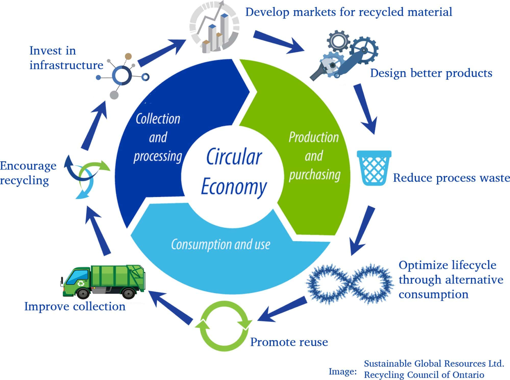

Plastic Waste Tracking
Plastic waste is a pressing environmental issue with far-reaching consequences.
Some points of it are:
1.Prolific Production:
The production of plastic has skyrocketed over the past few
decades,leading to a surge in plastic waste.It is estimated that over 300 million tons
of plastics are produced annually worldwide.

2.Persistant Pollution:
Plastic waste is a notorious for its long -lasting environmental impact.
It takes hundreds of years to degrade and leading to accumulation of plastics in landfills,oceans and natural
habitats.
3.Microplastic Hazard:
Smaller plastic particles,known as microplastics,are growing concern. These
tiny particles can be indigested by aquatic organism and in turn enter the food chain,potentially
impacting human health.
4.Global Concern:
Plastic waste is a global concern that requires international cooperation.
Many countries and organization are working to address this issue through initiatives and agreements aimed at reducing
plastic waste and improving waste management.

5.Individual responsibility:
Reducing plastic waste also involves individual
actions,such as reducing personal plastic consumption,reusing items,and properly disposing of plastics
through recycling and waste management

The opportunities of exploring alternatives to plastic packaging
The long-term way to tackle plastic waste is to
deploy alternatives to plastic packaging. This sector is emerging and many interesting business models are
being deployed on this topic. These solutions are usually profitable and have a huge social and environmental
impact. In Europe, a very interesting example of sustainable delivery model is the LOOP project led by
TerraCycle and a great solution of alternative to plastic packaging is Ooho created by Notpla.
In South-East Asia, Revolv has set up a deposit scheme in order to reduce single-use plastics and
Evoware produces interesting biodegradable packaging made out of algae.
Various actors are positioning themselves on the topic. For instance, The Incubation Network,
created by Circulate Capital and SecondMuse is supporting a network of actors to foster the emergence of
inclusive and gender-responsive waste management and circular economy solutions. One of their area of
interest is product redesign and the creation of new distribution models and alternatives to plastic packaging.
The Incubation Network builds the capacity of support infrastructures such as incubators, works with
governments to support the creation of a positive environment for entrepreneurship and fills the gaps if
needed by mobilizing capital and bringing technical expertise to local innovators directly.
Promising solutions already exist in South-East Asia and the local environment is being structured to
foster the growth and the emergence of new actors. Governments are indeed working hand-in-hand to share
best practices and expertise on the topic. As the balance between doing good and being profitable can be
hard to find, entrepreneurs should make sure that they have a positive environmental and social impact by
identifying, monitoring and also communicating about the externalities of their solutions.
Benefits of circular economy:
1.To protect the environment
2.Reduce raw material dependance
3.Create jobs and save consumers money
4.Replaces end of life concept with restoration

Plastic hub in INDIA

Sustainable Cities and communities:
While SDG(Sustainable development goal) 11 primarily focuses on sustainable cities
and communities, the issue of plastic waste aligns with various targets within this goal.
Specific aspects related to plastic waste within the context of SDG 11 include:
1.Waste Management : It aims to reduce the adverse per capita environmental
impact of cities, including by paying special attention to air quality and municipal and other
waste management. Effectively managing plastic waste is crucial for minimizing environmental impact.
2. Green and Public Spaces : Creating safe, inclusive, accessible, and green public spaces
is essential for reducing the use of single-use plastics and promoting responsible waste disposal
practices.
3.Resilience to Disasters : disaster risk reduction measures into city
planning includes addressing issues like plastic waste management to enhance resilience in the
face of environmental challenges.Addressing plastic waste within the framework of SDG 11
involves implementing policies and practices that reduce plastic consumption, encourage
recycling, and ensure proper disposal to create sustainable and resilient urban environments.
Generation of plastic waste
Unmanaged and littered plastic waste including plastic packaging waste has adverse impacts on
terrestrial and aquatic ecosystems. The Plastic Waste Management Rules, 2016, provides the
statutory framework for plastic waste management in an environmentally sound manner throughout
the country. Considering the adverse effect of littered single use plastic items on terrestrial,
aquatic and marine ecosystems, the Ministry notified the Plastic Waste Management Amendment
Rules, 2021, on 12th August 2021, prohibiting identified single use plastic items, which have
low utility and high littering potential, from 1st July 2022. The Ministry of Environment,
Forest and Climate Change has also notified the Guidelines on the Extended Producer
Responsibility for plastic packaging vide Plastic Waste Management Amendment Rules, 2022,
on 16th February, 2022.
As per Annual report of Central Pollution Control Board (CPCB) on the implementation of Plastic
Waste Management Rules, 2016, the plastic waste generated in the country during the last
five years are given below:
| Serial number |
Year |
Plastic Waste Generated (Tonnes Per Annum- TPA) |
| 1. |
2016-17 |
1,568,714 |
| 2. |
2017-18 |
660,787 |
| 3. |
2018-19 |
3,360,043 |
| 4. |
2019-20 |
3,469,780> |
| 5. |
2020-21 |
4,126,997 |
The total Extended Producer Responsibility (EPR) of registered producers, importers
and brand owners for plastic packaging is around 3 million tonnes for the year 2022 – 23,
under EPR Guidelines. The EPR certificates generated by registered plastic waste processors
after processing of plastic packaging waste including recycling is 2.5 million tonnes.